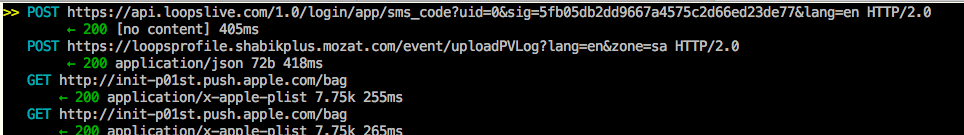
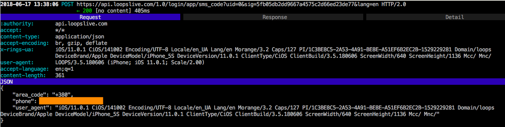

I continue to play with SSL pinning on iOS. This time is was AFNetworking framework. Today a random guy from Twitter asked me to disable SSL on the Loops app for Android and iOS. From time to time I do quick researches for free, so why not?
It is well known that the “key function” of SSL pinning protection in AFNetworking is the method
-[AFSecurityPolicy evaluateServerTrust:forDomain:]
declared as
- (BOOL)evaluateServerTrust:(SecTrustRef)serverTrust forDomain:(nullable NSString *)domain;
It returns 1 if domain is safe, and 0 otherwise. So, the easiest way to crack SSL pinning here is to hook the method and replace the result with 1. I wrote a simple Frida script:
/*
**********************************************
disable_ssl_pinning_in_loops.js Frida script
by Dima Kovalenko
**********************************************
Usage:
1. Run Loops on the device
2. Inject the script to the process:
$ frida -U -n LOOPS -l disable_ssl_pinning_in_loops.js
3. SSL pinning in Loops HTTPs is
disabled. Now you can intercept
Loops HTTPs requests, e.g. with
mitmproxy.
IMPORTANT NOTE: Use an HTTP(s) sniffer with HTTP 2.0 support!
*/
function main() {
var resolver = new ApiResolver('objc');
var matches = resolver.enumerateMatchesSync("-[AFSecurityPolicy evaluateServerTrust:forDomain:]");
if (matches.lenght == 0) {
console.log("\n[E] -[AFSecurityPolicy evaluateServerTrust:forDomain:] is not found!\n");
return;
}
Interceptor.attach(
ptr(matches[0]["address"]),
{
onLeave: function(retval) {
console.log("[I] -[AFSecurityPolicy evaluateServerTrust:forDomain:] hits!");
retval.replace(1);
}
}
);
console.log("[I] -[AFSecurityPolicy evaluateServerTrust:forDomain:] is hooked!\n")
}
main();
The script was tested with iPhone 5s running iOS 11.0.1 with Electra 1.0.4. As result, I saw HTTP(s) traffic of the Loops app:


The research and the script creation took 30 min.
WARNING! If you wanna try to use the script, do it on your own risk. Stable and safe work of the script is not guaranteed.
So it goes.
Commenting is not available in this blog, but you can write me a letter or message. Please, note that English is not my native language. I'm sorry for mistakes/missprints, if any.
Prev: Disabling SSL pinning by hooking SecTrustEvaluate(...) on iOS 11